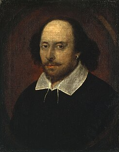
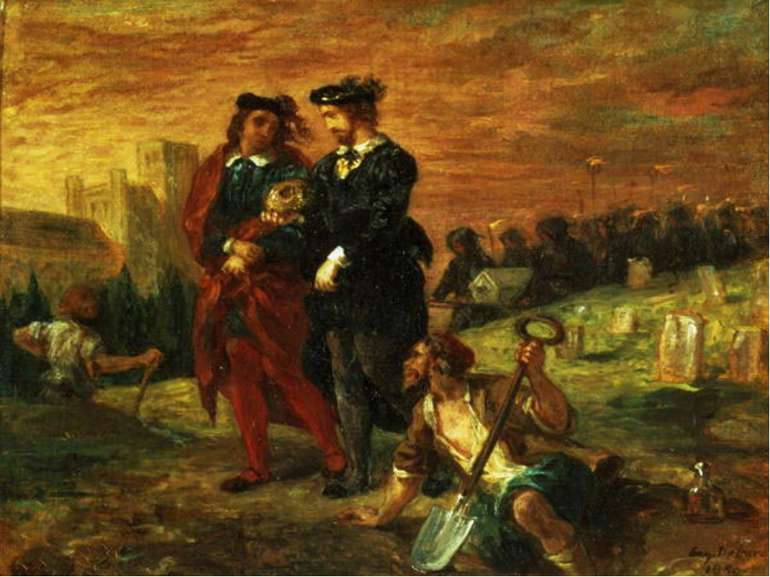
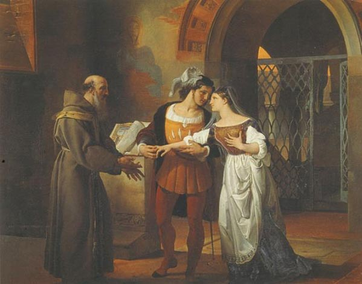

Вільям Шекспір
Вільям Шекспір - англійський драматург єлизаветинської епохи, актор і поет. Один із найвідоміших драматургів світу, автор принаймні 17 комедій, 10 хронік, 11 трагедій, п'яти поем і циклу зі 154 сонетів.

Існують різні погляди на особу і біографію Шекспіра. Основним науковим напрямом, підтриманим більшістю дослідників, є біографічна традиція, що склалася впродовж декількох сторіч, згідно з якою Вільям Шекспір народився в місті Страдфорді-на-Ейвоні в заможній, але не в благородній сім'ї і був членом акторської трупи Річарда Бербеджа.
Існує також протилежна точка зору, «антистратфордіанство», прихильники якої заперечують авторство Шекспіра (Шакспера) із Стратфорда і вважають, що «Вільям Шекспір» — псевдонім, під яким ховалася інша особа або група осіб. Сумніви в традиційній точці зору відомі вже починаючи з XVIII століття. Разом із тим, серед антистратфордіанців немає єдності щодо того, хто саме був справжнім автором шекспірівських творів. Число ймовірних кандидатур, запропонованих різними дослідниками, станом на XXI століття налічує 87 осіб.
Шекспір як драматург
Як драматург Шекспір почав виступати з кінця 80-х років XVI століття. Дослідники вважають, що спочатку він опрацьовував і перероблював вже існуючі п'єси — і лише згодом перейшов до створення своїх власних творів. П'єси Шекспіра користувалися великою популярністю, проте мало хто знав його ім'я у той час, оскільки глядач звертав увагу насамперед на акторів.

Перший період припадає приблизно на 1590—1594 роки. За літературними прийомами його можна назвати періодом наслідування: Шекспір ще весь у владі своїх попередників. Комічні жахи «Тіта Андроніка» — пряме і безпосереднє віддзеркалення жахів п'єс Кіда і Марло, що отримали у молодого незміцнілого письменника ще безглуздіший розвиток.

Наче на порозі другого періоду творчої діяльності Вільяма Шекспіра (приблизно 1594—1601 роки) стоїть один із знаменитих його творів — «Венеціанський купець». У ньому ще немало наслідування, але в цій п'єсі геній Шекспіра вже могутньо виявив свою самостійність і з незвичайною яскравістю проявив одну з найдивовижніших своїх здібностей — перетворювати грубий, неотесаний камінь запозичуваних сюжетів на художню скульптуру, що вражає досконалістю.